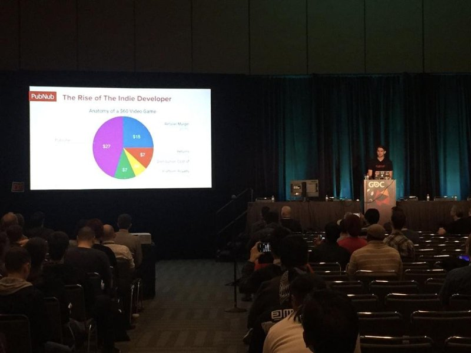

Yoshua Castro
As a fourth-year psychology student at the University of California, Riverside (UCR), my academic journey has been shaped by both curiosity and purpose. When I first entered college, I knew I was interested in understanding people—why they think the way they do, why they behave the way they do, and how early life experiences shape who they become. Over time, that general interest developed into a focused passion for child development, adolescent mental health, and supporting troubled youth.
My coursework at UCR has given me a strong foundation in developmental psychology, abnormal psychology, research methods, and counseling theories. Through these classes, I began to see how childhood experiences, family dynamics, trauma, and social environments influence emotional regulation and behavior. Learning about attachment theory, cognitive development, and the impact of adverse childhood experiences helped me understand that behavior is often a response to deeper unmet needs. Psychology stopped being just a subject I studied—it became a lens through which I view the world.
Outside of the classroom, I have worked in child development settings where I assisted with early learning activities and supported young children as they reached developmental milestones. In those environments, I learned the importance of patience, structure, and positive reinforcement. I saw how small moments—encouraging a child to try again, helping them regulate frustration, or celebrating progress—can build confidence and resilience. Working with children strengthened my communication skills and taught me how to adjust my approach based on individual needs.
My experiences in adolescent mental health have been especially impactful. I have supported programs that work with teens facing anxiety, depression, behavioral challenges, and family instability. In these settings, I helped facilitate group activities and provided encouragement to youth who often felt unheard or misunderstood. I learned how critical it is to create safe spaces where adolescents feel respected and valued. I also saw how identity development, peer pressure, and social expectations can intensify emotional struggles during this stage of life. These experiences deepened my empathy and reinforced my desire to work in mental health.
Helping troubled youth has challenged me to grow both personally and professionally. Whether through mentorship programs or community outreach initiatives, I have worked with young people navigating academic struggles, behavioral concerns, or unstable home environments. Building trust with them required consistency, authenticity, and strong boundaries. I learned how to de-escalate tense situations, encourage accountability, and model healthy coping strategies. Most importantly, I realized that meaningful change does not happen overnight—it develops through steady support and genuine connection.
As I approach graduation, I feel confident that my experiences at UCR and in the community have prepared me for the next step. My goal is to continue working in mental health, possibly pursuing graduate studies in counseling or clinical psychology. I am committed to advocating for children and adolescents who may not always have strong support systems. Through compassion, evidence-based practice, and continued learning, I hope to contribute to a field that has the power to transform lives—just as my education and experiences have transformed mine.
Experience
Behavioral Therapist
• Oversaw troubled youths in a live-in settting
• Assessed, diagnosed, and treated mental health, emotional, and developmental disorders by helping clients modify harmful behavior patterns
• Developed personalized, evidence-based treatment plans
Boxing Coach
• Responsible for teaching troubled youths in area
• Also gave life/career advice
Mathematic Teaching Assistant
• Ran sessions to help students learn current math curriculum
• Reviewed and graded student mathematics projects
• Created educational content to help promote student education
• TA'd for over 400 students each academic quarter
Education
UC Riverside
Portfolio



